用于方法调整的免标记区分法
靶向蛋白质组学作为一个检测方法已受到越来越广泛的关注，其主要优势表现在跨生物组间蛋白质和多肽表达的差异性分析。Skyline 最初由美国国家癌症研究所 (NCI) 癌症临床蛋白质组学技术评估 (CPTAC) 项目资助建立，因为它致力于显示靶向蛋白质组学可以有效地应用于疾病生物信号的检测和可靠性验证。
在本教程中，您将使用 Skyline 用于分析一组SRM数据。这组数据来源于一个条件控制的盐敏感型老鼠心力衰竭实验。这个实验通过检测一系列文献中报道的与心力衰竭有关的潜在蛋白，来分析疾病组和健康组中血浆蛋白表达的差异。
本实验监控了 49 个蛋白质中的 137 个肽段在 42 次 LC-MS/MS 测试过程中的情况。当您熟悉了本教程讲述的数据处理和视图技术后，您将能够更轻松地管理和处理更大型数据（更多的实验组，更多的目标蛋白）。而如若没有本教程，您很可能会在处理更小数据集时仍感到茫然失措。我们在这里了解到的知识可以应用于更大的数据集和 Skyline 支持的其它采集方法（PRM、DIA 和 DDA）。
开始本教程前，请先下载下列 ZIP 文件：
https://skyline.ms/tutorials/GroupedStudies1.zip
将其中的文件解压到任意文件夹，如：
C:\Users\brendanx\Documents
这将创建一个新文件夹：
C:\Users\brendanx\Documents\GroupedStudies1
在这个新文件夹中，您会发现里面有个子文件夹：
按接下来的内容，我们将学习如何处理这类研究的数据，以及更好地理解蛋白质/肽段研究的目标以及整体的数据质量分析。
在您刚刚创建的“GroupedStudies1”文件夹中，“Heart Failure”子文件夹的数据收集于 MacCoss 实验室在研究靶向方法调整教程中所述方法的应用潜力和限制因素的过程。这些数据出于某些原因从来没有被正式发表。当您使用 Skyline 来处理收集的实验数据时，您会对其中的一些原因有更直观的理解。不过，从靶向方法调整实验和其它类似实验中衍生出的许多理念已独立于该数据集发表。1
在最开始的研究中，我们依据文献中的报道，选取了109 个潜在的与心力衰竭有关的蛋白质。这些蛋白质的信息被添加进了 Skyline 文档。其中一些蛋白质的添加方法是导入蛋白质序列的 FASTA 格式文本，并允许 Skyline 执行电脑模拟的胰蛋白酶解。在 Skyline 中的参数中，设置包括在全位点裂解后所有长度在6 至 30 个氨基酸之间的肽段。而其它蛋白质，电脑模拟的酶消化在Skyline软件外执行，然后把酶消化后的肽段直接复制到 Skyline 文档中（详见靶向方法编辑教程）。通过这两种方法，我们创建了一份带有 2,165 个目标肽段的文档。对于每一个双电荷前体，其对应的单电荷离子体均包含在考虑范围。这个初始的穷尽法包括了 12,194 个离子对，并通过非常规SRM方法用于在大鼠血浆样本的测试。这种初始分析仅进行过一次，在 2009 年需要进行 151 次单独的质谱仪测试。如今我们可以在该阶段采用 DIA，因为在质谱仪上运行一次就可以测试全部 2,165 个肽段。
151 个原始数据文件被导入 Skyline，用于确定血浆基质中那些无需进行后续样品处理就能直接检测出来的目标肽段。在充分全梯度洗脱后，原始的 2,165 个目标肽段中仅有 135 个（来自 49 个蛋白质）有目标 y 离子峰（2 个为3 离子、5 个 4 离子、27 个 5 离子以及103 个6 离子）。其余的 780 个离子对则用于定量测试，每次实验的总长为 90 分钟，检测到的峰周围使用 5 分钟的保留时间窗口。我们使用这种方法测试了 14 只盐敏感性大鼠（7 只是健康的，7 只通过高盐诱导产生心力衰竭）的血浆消化产物。每个样品均进行了三次平行实验，总共 42 次测试。这些测试结果将在当前教程中分析，其目的是确定这 135 个可检测到的肽段中，哪些肽段在两组实验中表现出表达差异，从而可能用作未来实验中的生物标志物。
本研究的总体目标，是确定能否从无需事先具备关于目标蛋白质或肽段的知识，也不要求具备稳定同位素标记的肽段作为参考的靶向研究得出有用的科学结论。
图 1：盐敏感性大鼠心力衰竭研究中靶向方法调整的原理示意图，包含“检测(Detction)”和“差异分析(Differentiation)”两个阶段。
要开始处理从差异分析阶段收集的数据，请先打开以下文件：
通过观查 Skyline 窗口右下角的显示栏，您会看到您打开的文件包括 49 个蛋白质、137 个肽段和 789 个离子对。

这并不是通过图1应得出的最理想情况（来自一份未发表的手稿中的分析结论）。虽然如此，介理该文档同时包括了一份额外的肽段列表（在文档底部，命名为“S”），其中包括了 3 个全球标准化肽段。它们旨在减小测量中系统方差对肽段样品的影响。对于这一点，您会在稍后的过程了解更清楚。另外，该文件肯定比上述文件少了 1 个单肽段的蛋白质。
您会发现，一些肽段有匹配的库谱图。您可以在目标视图中查看相关结果。在右下角肽段图标中，有谱图线标记的 ( ) 表示有相应匹配的谱图，没有的 (
) 表示有相应匹配的谱图，没有的 ( )
则表示没有匹配谱图。这些谱图来自两个不同的公共谱图库：一个来自 NIST，一个来自全球蛋白质组机构 (GPM)。您可以按以下步骤探索其覆盖范围：
)
则表示没有匹配谱图。这些谱图来自两个不同的公共谱图库：一个来自 NIST，一个来自全球蛋白质组机构 (GPM)。您可以按以下步骤探索其覆盖范围：
现在，您可以向下滚动就可以看到有相应匹配谱图的肽段数量（总共80，其中49来自于NIST，31来源于GPM）。请注意，所选单元的行编号显示在网格上方的工具栏中。

在当前的例子中，您将会了解一些与这个实验相关的的基础知识。现代人对蛋白质的认识可能高得多，并且 Prosit 等谱图预测工具现在集成在 Skyline 中，可以完全覆盖目标肽段。
开始处理14 个受试对象在三 平行实验中采集的 SRM 数据，请执行以下操作：
文件将开始加载，Skyline 会显示一个如下的进度窗口：

按以下操作可在 Skyline 导入 SRM 色谱图时，继续准备其它数据处理操作：


此分组窗口应如下图所示：

您的 Skyline 窗口现在应看起来像这样：

注意：此图片取自分辨率 1920x1080 的 24 英寸显示屏。如果您正使用本教程的电子版，您可以将其放大到 200% 或更多来查看此图片。本教程之后的内容，会返回至使用更适合 8½ x 11 英寸页面排版的图片。许多 Skyline 培训使用的是 1024x768 的屏幕分辨率，而如果您使用更大的显示屏会有更好 Skyline 的使用体验。
查看第一个肽段 K.GILAADESVGSMAK.R [28, 41] 的保留时间视图，您会看到整合分布不是非常一致。大部分考查的峰洗脱时间约为 19 分钟。但将近三分之一 的(12) 洗脱时间接近 22 分钟。

这个肽段的整合相当差。虽然 19 分钟左右处的峰看似较好，但很难让人相信它由单肽段生成。此外，任何整合调整都不可能在所有测试中都一致地测量到单一的肽段。所以，您不应浪费时间尝试做更多的调整，而应：
仅通过查看第二个肽段的保留时间图，您便能看出，它的整合一致性更高。
但您仍可以看出，所有离子对的峰顶点（由条状图中的水平线显示）不是很一致。如果您查看其中一些色谱图，您会看出这些峰的强度也是从中到低，参差不齐的。
如果您没有看到上方显示的顺序，即所有患病组的重复测定 (D_)在左，所有健康组的重复测定 (H_) 在右，则执行以下操作：
在进行接下来的分析前，对您正查看的绘图做最后一次调整。
这样，峰面积绘图会从如下：
改变成这样：
这样您便可能一眼看在出多个运行中相对离子丰度值的差异，并将这些结合到您从保留时间视图获取的信息中。从这些信息中，您可能注意到了 D_103_REP3 和 D_108_REP2 有很显著的差异，且 H_162_REP3 与其它所有重复测定结果均有差别。但请注意，当只使用保留时间视图时，只有 D_108_REP2 样本看起来比较可疑。
按以下步骤可检查和更正这些峰：
这将会激活这个峰的色谱图，显示如下：
而正确整合的峰的图形更应该像这样：
由于预先设定的采集窗口不能捕获到完整的峰洗脱图，所以 Skyline 拣选了错误的峰。但您仍能查看到正确的峰型，直到约 30.2 分钟峰洗脱结束。这被称为“截短的峰”。但是，您仍可以通过校正这个肽段的积分整合来使用这个不完整的峰，具体步骤如下所述：
D_162_REP3 的峰也被截短。但正如在几个其他情况中一样，Skyline 已正确地选择了它。通过仔细查看保留时间绘图，您也许能够推断出峰截短的情况。仔细注意条带的宽度以及水平线与条带边的距离。
像这样非标记数据的处理，峰截短是一个需考虑的重要问题。在同位素标记的参考肽段中，峰的每一个点都提供了有效的轻重肽段母离子间比例。截短峰本身的精确性将无法保证，但轻重肽段之间的比例数据仍然是有效的。而相对地，若使用非标记数据，您不能将截短的峰算作肽段的一个有效测量。您只能用缺失的数据计算差分统计分析，或者完全在分析中完全忽略此肽段。Skyline 记录截短的峰的目的在于使其仍可能用于其它下游分析工具。
Skyline对截短的峰定义为，该峰的其中一个积分边界处在色谱图的端点，且此端点的峰强度比另一积分边界的强度高出超过 1% 的峰高值。
按以下步骤可查看其它被 Skyline 确认为截短的峰的积分整合峰：
此查找分类应看起来如下图所示：
Skyline 会显示一份被截短过的母离子和子离子列表，前三个是您刚刚查看过的。您可以双击任何行来查看相应的色谱图图形。
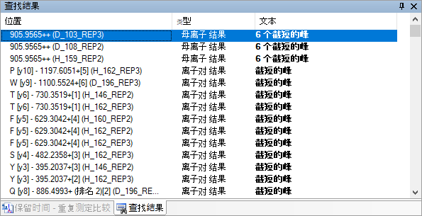
您也可以使用文档网格创建一份包含所有截短的峰的所有母离子的列表，具体步骤如下：
自定义报告表单应显示如下：
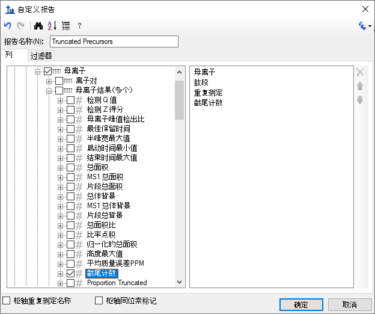
自定义报告表单应显示如下：
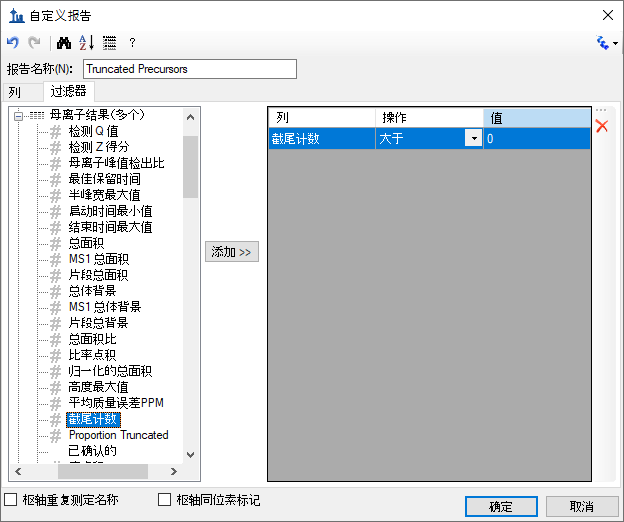
文档网格将显示 Skyline 已自动选择的 221 个截短的峰：
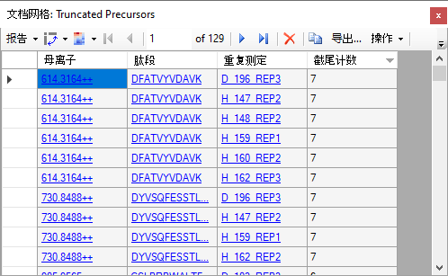
若要查看这些峰：
Skyline 会激活类似如下的色谱图图形：
肽段 LGGEEVSVACK 看起来比我们目前已看到的其他两个肽段好很多。在所有平行实验组中，其保留时间相当稳定，所有离子对的水平峰顶点线也几乎彼此匹配。
在峰面积视图中显示的相对离子丰度值也看起来相对稳定。您可能会注意到，这个肽段在标准图库有一个对应的谱图，且这个标准谱图的相对离子丰度值（显示在绘图中最左边的条带）与测量峰的丰度值基本相似。按以下步骤可更好地理解肽段与其相应的图库谱图的匹配程度：
Skyline 将向您显示点积 (dotp) 关系，它是衡量库谱图峰强度和测量的峰面积之间相似度的指标，范围从 1（最好）至 0（最差）。
如要返回峰面积视图之前的状态， 请按以下步骤执行：
现在，按以下步骤来更直观地查看这些峰的色谱图：
您可能注意到，一些离子对在这个主峰的边缘显示出了信号，但与其它峰并没有很好地匹配度。
在大约 13.1 分钟左右，y5 和 y6 频繁地出现信号，但很明显这些不是来自同一个肽段。
当在积分边界内出现像这样干扰信号时，定量测量出错的机率会更大。对于关键的定量数据，您可能需要考虑这个肽段是否需要所有 5 个离子对。
但仅就当前的教程，我们可继续进行下一个肽段的处理。您会在那里看到高强度、无干扰的所有7 个离子对的共洗脱峰。
相对离子丰度值亦高度一致。
y3 中的峰面积比在标准库谱图中看到的更强。这可能是因为离子在三重四极杆仪器中会产生二次碎片，而在使用共振激发的离子阱仪器中，这是不会发生的。我们的标准谱图来自于一个 NIST 公共库，而我们无法查询至生成它的仪器类型的信息。
我们一眼即可看出这个肽段积分整合结果非常好，因此，您可以不再进一步查看而直接进入到下一个肽段 R.GSYNLQDLLAQAK.L [378, 390]的分析。对于接下来的这个肽段，保留时间和峰面积视图都显示了问题。按以下步骤可了解这些测量的问题在哪：
在前 5 次重复测定中，目标峰在 32.5 至 33.5 分钟左右，在所有 5 个离子对上均有信号。但在 35 分钟左右，您还能看到另一个峰，它的信号几乎集中在 y4 和 y5 离子对。这个峰肯定是由另一个肽段造成的。在这样的情况下，与目标肽段不匹配的干扰信息会导致您看到的色谱图“风景”含有额外的内容。
在 D_103_REP3 中，您会看到整合峰出现在 33.9 分钟，信号几乎全部集中在 y4 和 y5，但它左边却没有其它候选峰。
在此情况中，调度窗口将无法捕获到目标肽段的任何信号。要移除谱图中错误的峰，可按以下步骤：
这样在峰面积图形中会留出一个空白处。
继续查看余下的色谱图，您会看到这个情况会重复出现几次。您需删除所有问题峰。同时，您将甚至会看到出现峰截短的现象。当您查看到 H_148_REP2 时，您会看到这样的情况，即 Skyline 选中了 33.9 分钟的错误峰，但目标峰的部分在谱图中仍是可见的。
您可以按它作为截短的峰的情况，并按照之前所述的方法进行相应处理（单击并拖拽 x 轴下方）。然后，您会得到如下所示的一幅峰面积示图：
以及一幅如下所示的保留时间示图：
您会发现，在整个 5 分钟的调度窗口中，所有整合峰中没有真正一致的信号。
蛋白质 NP_001012027 中接下来的三个肽段都没什么大问题，保留时间和相对离子丰度值均相对稳定。
您可能会觉得，在保留时间中观察到的方差没有预期中的稳定。尤其是当按逻辑顺序来运行测试时，这种情况会经常发生。当前的顺序是您将重复测定导入文档所造成的结果。对于这种性质的研究，一个实用的作法是先列出所有患病组的受试对象，然后是所有健康组的受试对象。每一个受试对象的平行数据需要被合并在一起。
对于肽段 TSDQIHFFFAK，保留时间显示如下：
但您也可以按照在仪器中采集的顺序查看运行，这有时也会非常有帮助。操作步骤如下所述：
图形会变为如下所示：
现在这个保留时间看起来会稍微稳定一些。如果您现在选择下两个肽段（LQPLDFK、SQLPGIIAEGR），则您会看到个模式的一致性如何。
下一个肽段 DFATVYVDAVK 有一些峰被截短。现在您应当可以单击峰面积视图中匹配欠佳的条形，并在相应色谱图中的 X 轴下方单击并拖动，快速纠正该问题。有一些峰的色谱图看起来噪声很多，下方图示中右边的图形便是这样一个例子。这是因为只有肽段峰的右边缘被测量，而更高强度的部分缺失了。
在这样的情况下，您一定得确保避免对 Skyline 未能识别为截短的峰的噪声信号进行积分整合。直接删除这些平行数据中相应的问题峰可能会更加简单。
本章节最后来看肽段 FGLYSDQMR，在保留时间视图中，您可以看到Skyline 主要挑选了在 19 分钟附近的一个峰。但是在峰面积视图里，这些峰的相对离子丰度值非常不一致。
如果您查看几个色谱图图形，您会发现很难有效地积分整合在18.8 分钟的峰， 以确认这些信号来自于同一肽段。这种情况下，您应该直接删除此肽段并继续下一步。
这个数据集缺少稳定同位素标记 (SIL) 的肽段，但它的样本中确实含有合成的全球标准肽段。它的目的是使用这些标准肽段用于所有其它实验测试肽段的峰面积的标准化，并减少 LC-MS/MS 实验阶段中的系统方差的影响2。要查看这些肽段，您可按以下步骤：
这会选中文档中最后一个肽段，AFGLSSPR。这三个被合并到名称为“S”的列表的肽段，即 HLNGFSVPR、VVLSGSDATLAYSAFK 和 AFGLSSPR，就是为实验注入的合成肽段。从我们已经查看的两个汇总图中，您可以完全信任最后两个肽段的自动积分整合结果。它们的保留时间和峰面积相对来说会很一致。
进行到肽段 HLNGFSVPR 时，您将观察到很一致的保留时间分布。但它的峰面积仍有一定的方差。y4 和部分 y3 峰的相对面积似乎在整个数据集中变化不定。
如果您单击一些 y4 峰度最强的的峰面积条带，您将看到在 y4 和 y3（有时）有明显的干扰。
为了更清楚地了解这些作为潜在标准化标准的肽段的表现，您应执行以下操作：
现在您能看到，从首样本到终样品，肽段 HLNGFSVPR 的峰面积急剧下降。总峰面积从大约 6,000,000 降至 30,000，差异足有 200 倍。看看您能否尝试使用结果网格（在视图 > 其它网格 > 结果网格下），并勾选 HLNGFSVPR 肽段母离子 513.7776++，来得到精确的最大和最小总峰面积。在查看其他两个标准肽段时，您会看到它们也随着时间降低了（VVLSGSDATLAYSAFK 2.3 降至 110 万，AFGLSSPR 23 降至 100 万）。所有的 42 项测试均应基本上是这三个肽段的技术重复测定。尽管在这组数据集中所有肽段均随时间有明显的系统信号降低，但许多肽段不太可能出现 200x 或甚至 20x 的降低幅度。
按以步骤可查看这些相互关联的肽段的洗脱位置：
色谱图图形将会变更如下所示，在同一图谱中显示“S”列表里的所有三个肽段。
现在来一起查看文档中的所有肽段：

这清楚表明两个有问题的肽段均表现出亲水性，并在早期洗脱。事实上，它们是此实验中第 3 个和第 10 个洗脱的肽段。您可以按以下步骤在 Skyline 中对此查看：
早期洗脱的肽段更倾向于表现出更多的方差。因此它们通常不是全球标准化标准的最佳候选者。这些肽段也可能受其他一些因素影响，如在自动取样器中排队时被降解。
另一种查看这些肽段与周围肽段表现的相似性的方法如下：
在尝试理解您看到的内容前，您应先记住，所有的非标准肽段均应表现出更大差异性，因为它们来自于 14 个受试对象测试。另外，积分整合调整也无法适应于所有肽段。在当前数据集中，Skyline自动拣选的峰看起来都符合标准。但是 HLNGFSVPR 肽段表现出第二高的CV 值，约为 160%； 而AFGLSSPR 肽段的CV值约为接近前 15 个肽段的中位数，50%。（VVLSGSDATLAYSAFK 肽段更具疏水性并为晚期洗脱，CV 为 18.6%，排在第 108 位或第 80 个百分位。）
按以下步骤，您会发现LGP 肽段有着与 HLN 肽段非常相似的问题。
请记住，应该有三个循环周期测试或技术重复测定：
为确保这些峰的积分整合是正确的，请按以下步骤：
您可以看到，尽管离子丰度绝对值从最低到最高有着 200倍差距 的分布范围（1.4 亿至 70 万），但各测试之间的相对离子丰度值是高度稳定的。
尽管这个肽段有相似的问题，您仍应该只将 HLNGFSVPR 这样的肽段排除在作为全球标准化标准的考虑范围之外。在理想情况下，在您将标准肽段加进重要的定量数据很久之前就应该这样做。在此例中，您应当仅使用 VVLSGSDATLAYSAFK 作为文档中其它所有肽段的全球标准化标准。更进一步地证明此观点已超出了本教程的范围。
现在，您将选择在“S”标准肽段列表之上的肽段 DVFSQQADLSR 来继续查看和更正本实验的峰积分。
在保留时间和峰面积图形中您会观察到一致性信息，这会让您相信所有运行中的肽段均已被一致积分。您无需再查看这个肽段而可以继续进行目标列表操作。此情况亦适用于接下来两个肽段。
继续在列表中操作直至遇到肽段 IFSQQADLSR。您会注意到，除了 H_146_REP1 之外的每一组重复测定均在峰面积图形中有一致的相对离子丰度值。另外，当您单击这项运行的条带时，您会看到H_146_REP1 的峰没有完全被 5 分钟时序安排的窗口所捕获。（您可能要关闭 x 轴缩放才能看到 — 按 Shift 加 F11。）
如您在前面所做一样，您可以通过单击并拖拽 x 轴下方来积分截短的峰，或右键单击菜单来完全删除这个峰。
然而这不并是此肽段的唯一问题。在观看保留时间图形时，您会观察到在被整合的时间范围内有些异常的差异。
如果您查看这个肽段的一些色谱图，您会看到许多色谱图显示了一个单独、状态很好的峰，其洗脱超过了 0.2 分钟。但其他色谱图带有一些延长至大约 0.5 分钟的拖尾，而其他仍显示了洗脱超过 2 分钟、有两个不同峰的肽段。
这样的肽段可能很难用于定量，尤其是没有匹配 SIL 的肽段。也许您应该从此实验中删除这个肽段。至少您应该从显示双重洗脱分布图的运行中删除这些峰。
继续在肽段列表中操作，您会发现接下来的 7 个肽段在汇总图中显示出很好的一致性，您应当不需要纠正 Skyline 执行的任何默认峰拣选，或甚至只要看一眼即可。
但当您进行到肽段 MLSGFIPLKPTVK 时，您会在峰面积图中看到更多的方差。
这个肽段的的总峰面积主要由 y7 离子占据。尽管这在库谱图中也有显示（在上方图形的最左边显示），但想要通过视觉观察色谱图中是否有任何肽段实际上与 y7 离子共洗脱是很困难的（见下方）。
但很明显的是，在大部分情况下 Skyline 在每一次运行中均整合相同分子的相同的峰。若要证实图中不只有 y7 峰，则您应该查看强度最高的一次测量。您可以按以下步骤执行：
这三张图中的色谱峰可证实，在 23 至 24 分钟之间y7峰对应的肽段事实上就是导致在肽段丰度值足够高时在所有 6 个受监控离子对上生形成共洗脱信号的肽段。
相较删除这个肽段之外，您可能更想更正 Skyline 选错色谱峰的这个事实。您可以在保留时间图中看到，在 22.5 分钟下方产生了一条更窄的条带，
同样情况在出现在峰面积图中，其中该运行没有可见的已积分信号。
您可以单击保留时间视图中的条带以激活该运行的色谱图。您会看到运行在 y7 离子对保留的信号非常低。在没有其它运行获取的信息作为参考时，不要单独选择这个离子对来代表一个肽段。
按以下步骤可更正该运行的积分：
在继续查看峰积分前，按以下步骤来返回峰面积图形以显示相对离子丰度值：
您会看到已更正的峰现在与汇总图中的其他运行更加一致。
继续进行到上方的肽段。在肽段 GMYESLPVVAVK，您会看到在汇总图中的一致性非常差，建议您无需费力调整积分，而是直接删除这个肽段。肽段 ETGLMAFTNLK 仅需在一个运行中进行调整。此项运行应当在峰面积图中比较明显。进行到本教程的这个阶段，您应该已非常熟悉哪些地方会出错以及如何解决问题。
在做完更正后，如果您仍不确定 ETGLMAFTNLK 肽段在所有情况下积分的均为相同肽段的相同峰，那么您可按以下任一种方式快速查看所有色谱图图形：
或者
在许多图形中您会看到，在被选中的峰前大约 1.5 分钟处，y3 和 y4 离子对有一个肽段干扰。这让您对已积分的峰的一致性更有把握。
继续在目标列表中操作，您会发现有些肽段（YANVIAYDHSR 和 TDEDVPSGPPR）显示出实际测量的相对离子丰度值和匹配库谱图的差异。您可以在峰面积图形中看到这些差异：
您也会在色谱图中观察到这些差异，而在这些色谱图中 Skyline 在峰保留时间下边显示了较低的点积值“（点积 0.28）”。
当在图形上有另一个点积值较高的峰时，Skyline 便会显示这样的“点积”值。在上述情况中，您无法看到点积值更高的峰，这是因为它接近被选中峰的噪声级别。按以下步骤可查看这个峰：
这样图形的 y 轴比例会缩放，直到您可以看到点积值更高的较小峰。
如果您十分确信库谱图是在与此实验中使用的质谱仪相似的仪器中收集，您所看到的内容一定会让您怀疑已积分的峰实际上没有在测量我们所讨论的肽段。但在此例中，您不知道这个谱图的来源，而除了使用这个样本制备测量此肽段外也不太可能有其他选择。
从峰面积和保留时间图形中各运行间一致性来看，您可确信相同的肽段在所有运行中是由 6 个共洗脱的离子对测量的。即使丰度值最高的离子是选择性低的 y3 离子，您也可以删除该离子对，来更仔细地查看其它离子的一致性和共洗脱信息（y9 是丰度值第二高的离子）。在您确定这个峰后，您可以使用撤消按钮 (Ctrl-Z) 将已删除的 y3 离子对还原到 Skyline 文档中。
在 TDEDVPSGPPR 上方的 7 个肽段中，您应仅看到肽段 SPQGLGASTAEISAR 的一个错误积分的峰。您现在应该可更容易地识别和更正这个问题。
之后您会看到肽段 CSSLLWAGAAWLR。根据您将在汇总图（见下方）看到的方差，最初您可能想删除这个肽段并继续前进：
但是如果您仔细查看，您会发现在健康受试对象中存在一致的区域。按以下步骤可更清晰地查看此内容：
图形会变为这样：
这样可更明显地看出在健康受试对象中有一个一致的峰可被积分，而在患病受试对象中并没有。如果查看健康受试对象的峰，您会看出它的强度相当低，且主要依靠 y4、y5 和 y6 离子的共洗脱。这个共洗脱很可能由一个肽段引起，但要确定这个肽段是否为 CSSLLWAGAAWLR 是很困难的。
查看患病组受试对象的色谱图，有时可以在 y6 离子对大约 21 分钟处发现可能为峰的信息，但通常很难观察到任何一致的洗脱模式：
|
D_102_REP3 |
D_108_REP1 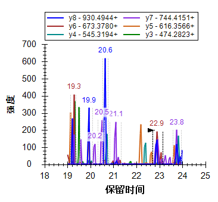 |
然而在患病受试对象色谱图中很明显没有可见峰，即没有生成类似健康受试对象中观察到的峰面积。从您现在已获得的关于峰漂移和截短的经验来看，您应该很有把握这个峰不仅仅漂移在所有患病受试对象的已测量范围外，还有健康受试对象。注射的随机性亦也许让您对此更有信心。但对当前研究来说，这三个重复测定循环已经足够了。当您以最大努力更正积分后，您也许还注意到此肽段中两个带有明显可见峰的患病受试对象运行紧跟在健康受试对象运行之后（D_102_REP2 和 D_102_REP3）。您所观察到的内容可能暗示存在延滞效应。
最后，这些离子对可能代表着本文档中最强的生物标记候选者之一。现在您可以订购一个合成肽段，让您更有把握您事实上是在测量 CSSLLWAGAAWLR 肽段。您也可以尝试在这个峰范围内采集 MS/MS 谱图（使用平行反应监测 — PRM）来查看它是否可以由一个肽段搜索引擎明确鉴定。最后如果这个方法失败了，您可以尝试 MS/MS 谱图重头测序，识别出是什么导致了健康受试对象中的峰。在靶向蛋白质组学中，并不总是需要以明确鉴定开始。或许与 SDS-PAGE 凝胶条带更相似，找到差异即可以启动发现。
现在，您应该可以完成对剩余肽段的操作，更正积分以及删除表现差的肽段。您可在一个小时内完成。您会发现，那些表现良好、可被时序安排的保留时间窗口完全捕获的肽段几乎不需要更正。通常仅需看一眼峰面积和保留时间图形即可分辨出来。对于表现较差、许多峰被截短或在时序安排窗口缺失的肽段，建议您直接将其删除。但小心不要过早下此结论，否则您可能会错过观察到一些有趣的内容。
在完成了仔细验证和更正您的 Skyline 文档中的所有积分问题后，您应将注意力转向寻找在不同实验条件之间可能存在丰度差异的肽段。无论在 Skyline 或其外部统计工具中，该分析都需要将测量的样本，即 Skyline 中的“重复测定”，进行进一步分类。Skyline 对这样的分类提供重复测定注释。在本教程中，您将使用到三个重复测定注释：SubjectId、BioReplicate 和 Condition。
按以下步骤可定义 SubjectId 注释：
窗口如下所示：
文档设置窗口如下所示：
尽管本教程不会讲述太多有关 Skyline 外部工具“MSstats”中可用的统计分析方法，但却能很好地适用于此类分析。该数据集已在许多课程和研讨会上用来演示 MSstats 的使用。如果您有兴趣探索 MSstats 对此种类型的分析有何帮助，您可以按以下步骤安装 MSstats 到 Skyline 中以获得所需的其他两个注释：
从工具商店安装窗口如下所示：
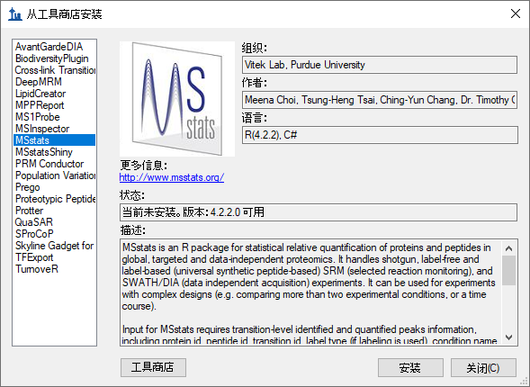
按以下步骤可查看在 MSstats 安装过程中添加注释或不安装 MSstats 直接添加：
这些注释的定义如下所示：
| 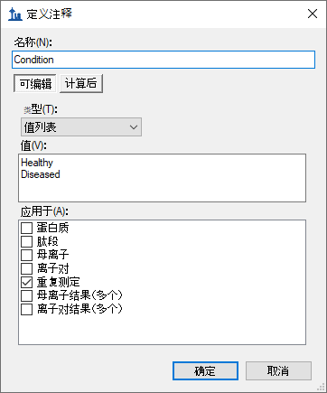 |
文档设置窗口如下所示：
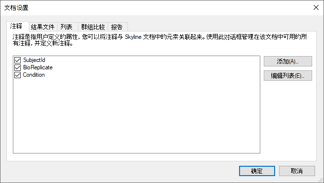
按以下步骤可设置已添加到文档的注释：
文档网格窗口如下所示：
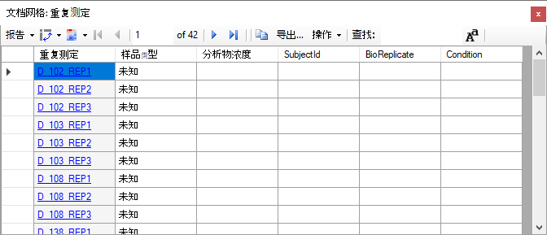
现在您可以手动将所有 42 个重复测定的注释输入到网格中。您也可以将电子表格中的值直接粘贴到这个表中。您可以按以下步骤执行：
注意：在此步骤不要进入单元格编辑模式。如果在顶部 SubjectId 单元格内看到闪烁的光标，按 Esc 键。
文档网格窗口如下所示：
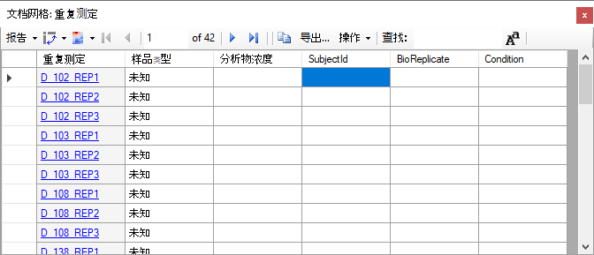
Skyline 会使用电子表格中的值填写文档网格中的单元格，如下所示：
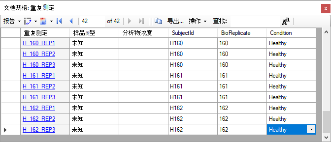
您可能也想注释峰被删除或有截短的肽段，因为这两者均可能在统计分析中引起问题。按以下步骤可定义您将用于此目的的注释：
定义注释窗口如下所示：
文档设置窗口如下所示：
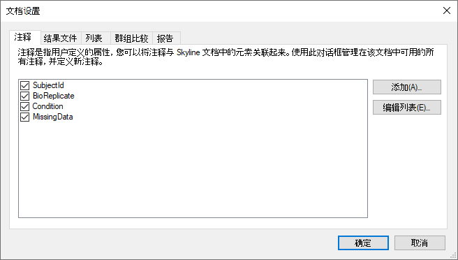
按以下步骤可准备对所有峰截短的肽段设置新的“MissingData”注释：
自定义报告表单应显示如下：
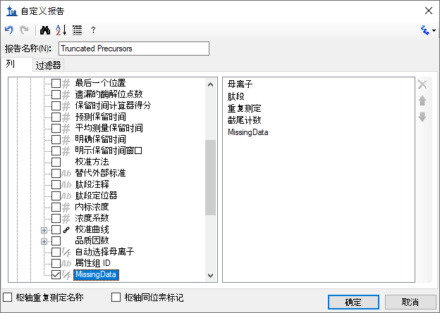
文档网格窗口如下所示：
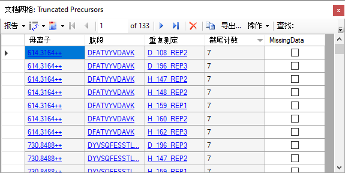
是否恰好存在 223 个截短的母离子峰组取决于您处理剩余文档的方式。您可以一次勾选一个肽段的“MissingData”复选框。当您勾选了任一肽段的方框后，其余会自动勾选，因为注释仅会应用于任一肽段一次。按以下步骤来立即尝试一下：
文档网格窗口如下所示：
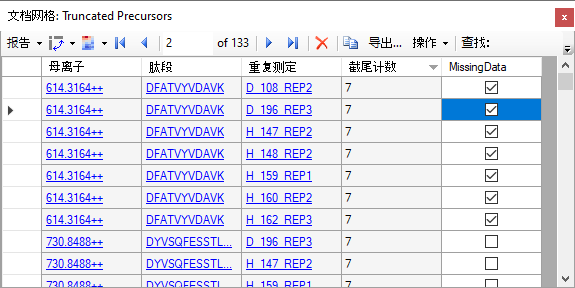
您也可以使用 Excel 和文档网格支持按如下所示在一次粘贴中设置所有 163 行：
你可能发觉这样有些多余。您只需要针对每一个肽段将 MissingData 注释设置为真。但相对于单击每个峰截短的 31 个肽段的复选框来说，这种方法可以更快地实现想要的结果。
当您完成了上述步骤后您会注意到，目标列表顶部的许多肽段均在肽段名称的右上角被标记了一小块红色的三角形。
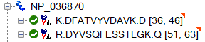
如果您将鼠标光标悬浮在这些三角形上，您会看到一则消息显示“Missing Data 真”。
对于您删除了而没有积分的峰截短的所有肽段，按以下步骤重复此过程：
自定义报告表单应显示如下：
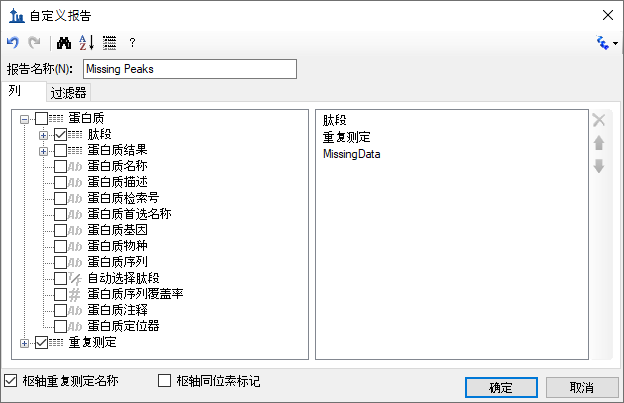
自定义报告表单应显示如下：
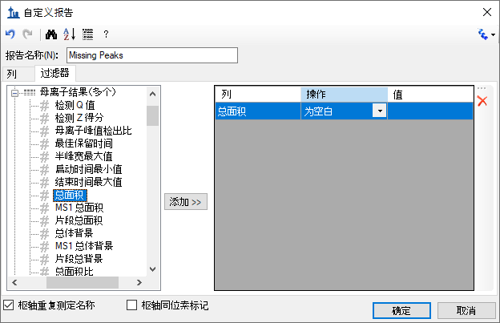
文档网格窗口如下所示：
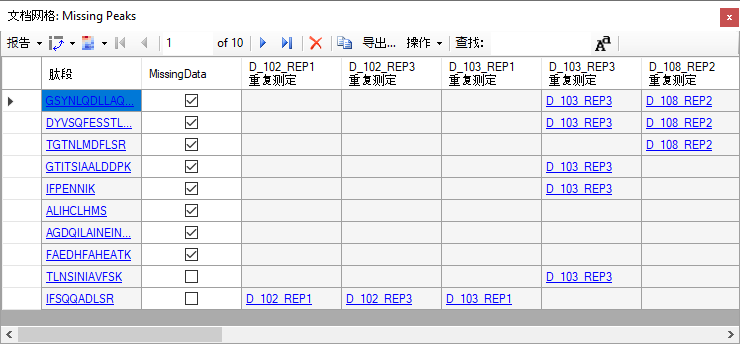
注意：如果您没有完全成功处理您的文档，则您仅会看到肽段 GSYNLQDLLAQ 的一行。下一个注释说明了如何打开一个全处理完全的文档。
在这个报告中，您可获得在所有运行中缺失一个峰的肽段的简要列表。您能明显看到有 10 个肽段，其中只有 2 个没有截短的峰，8 个设置了“MissingData”注释。带有缺失峰的重复测定名称位于肽段和MissingData列右侧的枢轴。若要完成标记所有数据缺失的肽段：
恭喜您！您已经完成了这个数据集的初始数据处理。在更清晰地理解了可能影响数据质量的问题，且在已采集数据允许的范围内进行了峰积分优化后，您已经可以开始运行更高级别的统计以进一步评估数据质量。我们希望，您会开始理解哪些肽段或蛋白质可能在事实上被证明适用于研究中病症的生物标记。
注意：如果进行到本教程的这个位置您还没有完全处理文档，或者您想将您的处理过程与本教程作者的过程比较，那么您可以打开随附于本教程中的已完全处理的文件，方法如下：
与 Skyline 当前提供的分析相比，您一定想对任何这样的数据做更深层次的统计分析，而 Skyline 正好可提供一些有用的方法进行方差和组平均值初始检查。按以下步骤可了解如何获得每个受试对象的技术重复测定中的方差：
这样峰面积图形如下所示：
现在您可查看更多肽段在每个受试对象的技术重复测定中的变异系数 (CV)。您会看到大部分在 25% 以下。然而在理想情况下，CV 应比在本实验中观察到的更低。值得说明的一点是，3 组测量相比 10 组测量更容易获取相同且较低的CV。这是因为，在统计学上，我们容易低估小型样本的标准偏差。
最终，通过使用 Skyline，您能初步了解本实验研究中两组的肽段表达差异。按以下步骤可初步查看健康组与患病组之间平均肽段丰度值的差异：
您会在峰面积视图中看到如下方蛋白质 NP_872280 肽段的图形：
在这些图形中，条带表示所有重复测定间的平均值（在此例中，是相对于总体标准品的峰面积比率），触须线表示平均值任一边的标准偏差。这样您会了解平均值来源于的样本分布。
在解读这份图形时，您需要理解测量各样本组间差异的目的，这很重要。两个最普遍的目的是：
如果您只是想检测两组中是否在统计上有显著差异，那么与分布的标准偏差相比，您应更关注平均值的标准偏差。T 检验中的 p 值会提供一个单独数值，显示了具有统计学意义的显著平均值差异，而这个差异与那两个平均值的标准偏差值相关。您不能从上方的图形中看出标准错误值，所以它们对于了解差异表达没有起到应有的作用。
在预测方面，两个群体的基础分布很重要。如果两组在一个标准偏差上就有多个重叠，所以单独这个肽段并不可能成为有效的生物标记物候选者。在此种情况下，我们很难预测是哪些分布产生了任何单一测量。在这里值得注意的一点是，我们仍有可能从非单独预测的一系列肽段中建立一个有力的“生物标记物组”。
上图中的肽段平均值在统计上有显著的差异，但并不具备单独预测性，而这由一个标准偏差的分布范围重叠进行了诠释。
继续在肽段/蛋白质列表中操作，您会看到紧上方的蛋白质 NP_036714 可以作为更有效的生物标记物候选者：
本实验中的许多肽段显示了两组之间的平均值在统计上有显著差异。考虑到我们的目标列表来源是关于心脏病差异蛋白质表达方面的文献，这也就不足为奇了。但这些肽段单独来看，却很少能成为有效的生物标记物候选者。
当您进行到含有肽段 CSSLLWAGAAWLR 的蛋白质 NP_001007697 时，您会观察到这样一种情况，即被分配到同一个蛋白质的肽段在健康组和患病组之间表现出非常不同的相对表达水平：
这告诉我们，虽然您能有把握在许多样本中测量相同的肽段分子，但却通常对将多个肽段母离子分配到相同来源的蛋白质方面几乎没有把握。有很多原因可以解释这种观察现象。例如，一种肽段可能拥有翻译后修饰 (PTM)，这使其成为重要的生物标记物候选者，而剩余的蛋白质可能没受到影响。
使用 Skyline 也可以对肽段或蛋白质的峰面积进行简单的成对群组比较。比较的方法为，汇总一个肽段或蛋白质的可用离子对峰面积，应用标准化（可选）、做记录、平均所有技术重复测定并对结果值执行 T 检验。Skyline 会自动丢弃缺少值或在非标记数据中有截短峰的重复测定。
按以下步骤可在您一直处理的数据集中进行尝试：
编辑群组比较窗口如下所示：

文档设置窗口如下所示：
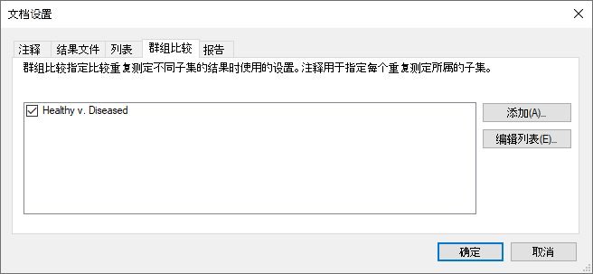
按以下步骤可查看您刚刚定义的群组比较：
Skyline 会显示如下的网格：
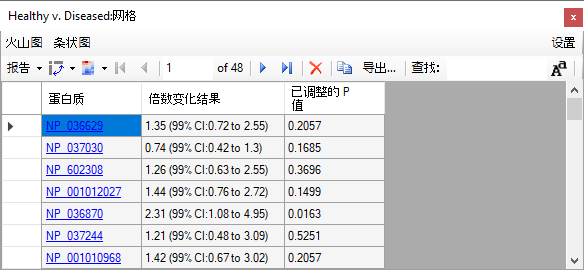
如果“倍数变化结果”列不显示完整的置信区间，则双击倍数变化结果和已调整的 p 值标题之间的垂直线。
若要查看已记录的倍数变化值和置信区间图表：
Skyline 会在 Healthy v. Diseased：网格视图旁边添加一个图形窗格，如下所示：
这将对网格和图表中的蛋白质进行排序。请注意，有许多置信区间的触须线横跨了基准线，说明在 99% 的置信度下，观测数据随机出现十分寻常，而且这还是在没有对多重假设检验做任何更正的情况下发生的。
在网格视图中按以下步骤，可基于 Benjamini-Hochberg 已调整的 P 值设置阈值，这种方法可以估计错误发现率 (FDR)：
您会看到网格工具栏显示的行数从 48 减少到 11，图形如下所示：
请注意，更多显著变化的蛋白质的倍数变化平均值为正，表明它们在患病组的受试对象中表现更为强烈。不过，重要的是要考虑未能使样本顺序随机化可能引起的问题。因为在所有三组测量周期中，是先测定患病组受试对象，后测定健康组受试对象，您应考虑到任何不计入标准化的降解会使得倍数变化在患病组中上调。
如果您如本实验一样收集技术重复测定数据，有一点对您的统计推断极其重要，即您需在编辑群组比较窗口中正确地指定这些重复测定。如果您没有正确指定，那么每一个测量均将被认为来自一个不同的生物受试对象，这样会错误地缩小您的标准偏差，最终降低置信区间且导致人为地降低 P 值。
按以下步骤可查看实际运行情况：
您会看到网格视图显示了 37 行（图形显示 37 个条带），已调整的 p 值小于 0.01。这是因为现在的统计是假设您有 42 个不同的受试对象进行计算的，而不是 14 个受试对象、每个受试对象做 3 组测量。这是很重要的差别，如您所见，在这一步出错可能造成十分尴尬、过度乐观的统计推断。在健康组和患病组间，原本有 11 个蛋白质的平均值在统计上有显著差异，FDR 约为 1%，而在这种情况下，却增长到 37 个蛋白质，甚至包括以恒定浓度注入的含有 3 个标准肽段的“S”蛋白。
回到本实验最初的目的，现在您可以将本文档缩减为仅仅一个肽段子集，这些肽段的组平均值在统计上有显著的差异，FDR 大约为 1%。但需要注意的是，由于缺乏随机化（患病组始终在健康组前测量）以及在运行中的系统信号下降，这组数据集可能夸大了患病组中上调的显著性。
尽管如此，您仍可以按以下步骤将此文档的目标列表缩减为一组组平均值差异大约为 1% FDR 的肽段：
Healthy v. Diseased：网格会在 1% FDR 阈值上方显示 92 行，图形如下所示：
按以下步骤可将这些肽段从文档中删除：
此网格如下所示：
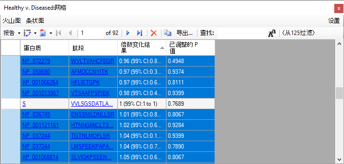
请注意，VVLSGSDATLAYSAFK 肽段的倍数变化为 1，99% 的置信区间为 1 至 1。这是作为标准化全局标准的单一肽段。建议您不要从文档中删除这个肽段。这就是取消选定它的原因。
Skyline 将显示以下消息用以确定您是否真想删除所选的行：
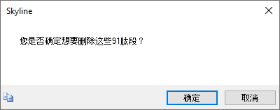
现在您可以关闭群组比较窗口，查看文档内剩余的 34 个肽段。虽然这些肽段的分布即使仅在一个标准偏差也有重叠，但所有这些肽段均会显示两个群组平均值的差异。也就是说，您会看到标准偏差触须线在峰面积图形重叠，而这些图形会仍显示按状态分组的峰面积。
在本教程中，您学习到了一些视觉评估和峰积分的更正方法，这些是 Skyline 对所有导入的 LC-MS/MS 色谱数据自动执行的操作。尽管您只处理了一组非标记的 SRM 数据集，但您在本教程应用的技巧可同样应用于其他基于色谱的定量方法的数据。这项检查和更正需手动操作的性质使其完美适合于包括不超过两千个肽段的数据集。在本例中，137 个肽段花费了大约 1 小时来处理，这意味着一组拥有 2,000 个肽段的数据集可能需要花上 2 天以上的时间。
对于更大的数据集，建议您首先了解肽段最初显示关于您正研究的各种状态之间的差异，然后根据这份信息对肽段执行一些粗略的筛检。这样的话，您仅需花时间处理此种类型的潜在相关肽段的手动检查和更正。现在通过使用 Skyline 群组比较支持，您应能够使用这种方法实现这种过滤结果。您可以对已调整的 p 值（或 FDR 阈值）放宽限制，可比在本教程中使用的 1% 略宽松，但方法仍是相似的。
现在通过了解这种类型的处理和对 Skyline 具备的功能的专业使用方法，您已明白它们是怎样帮您理解和更正您的定量实验中潜在的错误来源。同时您也亲自处理了分配错误的峰、干扰、峰截短、丰度值级别很难检测的肽段、200 倍肽段信号降解和共洗脱肽段。Skyline 提供了一系列工具用于理解、更正和注释这些问题，掌握了这些工具后，您应当能够减少定量靶向蛋白质组学实验中的错误，并且更有效地理解一些生物学上的见解。
1. Bereman, M. S., MacLean, B., Tomazela, D. M., Liebler, D. C. & MacCoss, M. J. The development of selected reaction monitoring methods for targeted proteomics via empirical refinement. PROTEOMICS 12, 1134–1141 (2012).
2. Zhang, H. et al. Methods for Peptide and Protein Quantitation by Liquid Chromatography-Multiple Reaction Monitoring Mass Spectrometry. Mol. Cell. Proteomics MCP 10, (2011).